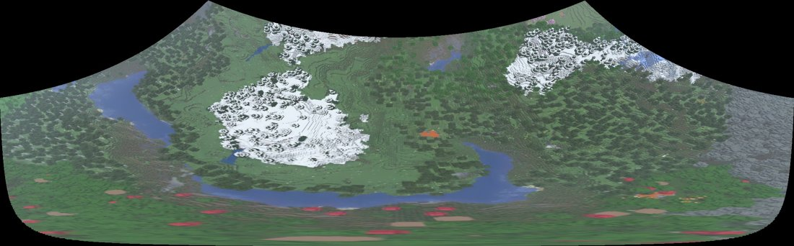

<!doctype html><meta charset="utf8"><link rel="stylesheet" href="sign.css">
<style>
#stage{padding:54px 56px 48px;box-sizing:border-box}
.head{display:flex;align-items:center;gap:22px}
.head svg{position:static;flex:none}
h1{margin:0;font-size:104px;font-weight:800;letter-spacing:-.025em;line-height:1.02;flex:1}
.count{font-size:28px;font-weight:600;color:var(--dim);white-space:nowrap;padding-top:26px}
.what{font-size:37px;line-height:1.3;font-weight:500;margin:14px 0 0;max-width:1060px}
.note{font-size:34px;line-height:1.34;font-weight:600;margin:22px 0 0;padding-left:22px;border-left:8px solid var(--c);max-width:1020px}
.cols{display:flex;gap:44px;align-items:flex-start;margin-top:40px}
.l{flex:1;min-width:0}
.lab{font-size:34px;font-weight:600;color:var(--dim);margin:0 0 18px}
.stops{position:relative;padding-left:46px}
.stops svg{left:0;top:0;width:40px;height:100%}
.stop{font-size:34px;line-height:1.22;font-weight:700;padding:0 0 24px}
.stop:last-child{padding-bottom:0}
.built{margin-top:34px;font-size:34px;font-weight:600;color:var(--dim);line-height:1.34}
.built b{color:var(--white);font-weight:700}
.r{flex:none;width:560px}
/* demo panels: a platform screen */
.screen{position:relative;outline:3px solid var(--white);background:#141517;padding:20px 24px 18px;box-sizing:border-box}
.chan{font-size:32px;font-weight:800;padding-bottom:12px;border-bottom:2px solid #3a3b3e;margin-bottom:6px}
.msg{padding:12px 0 6px}
.who{font-size:30px;font-weight:800}.who i{font-style:normal;font-weight:600;color:var(--dim);margin-left:10px}
.who u{text-decoration:none;font-size:20px;font-weight:800;border:2px solid var(--dim);color:var(--dim);padding:1px 6px 0;margin-left:8px;position:relative;top:-2px}
.tx{font-size:30px;line-height:1.28;font-weight:500}
.tx.p{font-weight:800;color:var(--c)}
.grid{display:flex;gap:5px;margin-top:5px}.grid s{width:26px;height:26px;display:block}
.foot{font-size:30px;font-weight:600;color:var(--dim);margin-top:12px;padding-top:12px;border-top:2px solid #3a3b3e}
.vid{position:relative;outline:3px solid var(--white);overflow:hidden;background:#141517}
.vid img{display:block;width:100%}
.dl{font-size:32px;font-weight:700;margin:0 0 12px}.dl.b{margin-top:22px}
</style>
<div id="stage"></div>
<script src="colors.js"></script><script src="lib.js"></script><script src="data.js"></script><script src="cards.js"></script>
<script>
// card.html?key=<key>: the card a past project's lane opens. facts from cards.js, numbers from data.js.
const key = Q.get('key') || 'jobradar-ai', C = window.CARDS[key], D = window.DATA, L = { name: (D.names || {})[key] || key }, col = colours(D.lines)[key];
const T = C.secs * 1000;
stage.style.setProperty('--c', col);
const G = { g: '#5f9d54', y: '#c9a93e', x: '#55575b' };
const msg = (who, app, when, body) => `<div class="msg"><div class="who">${who}${app ? '<u>APP</u>' : ''}<i>${when}</i></div>${body}</div>`;
let demo = '';
if (C.demo === 'alerts') demo = `<div class="screen"><div class="chan">#job-alerts</div>${C.scan.alerts.map(a => msg('JobRadar', 1, '2:16 PM', `<div class="tx p">[PRIORITY] ${a[0]}</div><div class="tx">${a[1]}</div>`)).join('')}
  </div>`;
if (C.demo === 'slack') demo = `<div class="screen"><div class="chan">#daily-puzzles</div>
  ${msg('SportsGrid', 1, '8:00 AM', `<div class="tx" style="font-weight:800">Daily puzzles - 2026-11-11</div>${['Wordle', 'Connections: Sports Edition', 'Statpad Baseball / NFL / NBA', 'Immaculate Grid x4'].map(g => `<div class="tx">* ${g}: Play</div>`).join('')}`)}
  ${msg('rohan', 0, '9:12 AM', `<div class="tx">@SportsGrid Wordle 1,971 3/6</div>${['xyxxg', 'gxygg', 'ggggg'].map(r => `<div class="grid">${[...r].map(c => `<s style="background:${G[c]}"></s>`).join('')}</div>`).join('')}`)}
  ${msg('SportsGrid', 1, '9:12 AM', `<div class="tx">Recorded your Wordle 1971 result. Nice solve! I only count your first @mention for each puzzle.</div>`)}
  <div class="foot">the bot's own message text, from its code</div></div>`;
if (C.demo === 'drone') demo = `<div class="dl">the test flight, 10 s at 30 fps</div><div class="vid"></div>
  <div class="dl b">stitched from 4 frames in 1.1 s</div><div class="vid" id="pv"></div>`;
const built = `<div class="built">built with <b>${C.stack.join(', ')}</b></div>`;
stage.innerHTML = `<div class="head"><svg width="60" height="60" id="bul"></svg><h1>${L.name}</h1></div>
 <p class="what">${C.what}</p>${C.note ? `<p class="note">${C.note}</p>` : ''}
 <div class="cols"><div class="l"><div class="lab">how it works</div><div class="stops"><svg id="rt"></svg>${C.steps.map(s => `<div class="stop">${s}</div>`).join('')}</div>${built}</div>
 ${demo ? `<div class="r">${demo}</div>` : ''}</div>`;
bullet(bul, 30, 30, 24, key, col);
const src = i => `.cache/drone/f_${String(i + 1).padStart(3, '0')}.jpg`;
window.__ready = Promise.all([document.fonts.ready, ...(C.demo === 'drone' ? [...Array.from({ length: C.frames }, (_, i) => new Promise(res => { const im = new Image(); im.onload = im.onerror = res; im.src = src(i); })),
  new Promise(res => { pano.complete ? res() : (pano.onload = pano.onerror = res); })] : [])]).then(build);
let stops = [], train, H = 0;
function build() {
  const box = document.querySelector('.stops'), rows = [...box.querySelectorAll('.stop')], top = box.getBoundingClientRect().top; H = box.getBoundingClientRect().height;
  rt.setAttribute('viewBox', `0 0 40 ${H}`);
  el('line', { x1: 14, x2: 14, y1: 0, y2: H, stroke: col, 'stroke-width': 15 }, rt);
  stops = rows.map(e => { const y = e.getBoundingClientRect().top - top + 20; return { y, row: e, dot: el('circle', { cx: 14, cy: y, r: 4.8, fill: INK }, rt) }; });
  train = el('line', { x1: 14, x2: 14, stroke: WHITE, 'stroke-width': 7, 'stroke-linecap': 'round' }, rt);
  window.__seek(0);
}
const msgs = () => [...document.querySelectorAll('.msg')];
window.__seek = ms => {
  if (!train) return; const t = ((ms % T) + T) % T;
  // the train runs the steps once per loop and rings each stop
  const run = T - 1400, p = -30 + cl((t - 300) / run) * (H + 70);
  train.setAttribute('y1', cl(p - 30, 0, H)); train.setAttribute('y2', cl(p, 0.01, H)); train.style.opacity = p > 0 && p - 30 < H ? 1 : 0;
  for (const s of stops) { const d = p - s.y, ring = d > 0 && d < 60 ? oq(1 - d / 60) : 0; s.dot.setAttribute('r', 4.8 * (1 + .8 * ring)); }
  // messages: all there on frame 0, then they clear and arrive one by one
  if (C.demo === 'alerts' || C.demo === 'slack') { const m = msgs(), t0 = T * .42, gap = T * .13;
    m.forEach((e, k) => { let a = 1; if (t > t0 - 500) a = 1 - cl((t - (t0 - 500)) / 300); const ta = t0 + k * gap; if (t >= ta) a = oq(cl((t - ta) / 350));
      e.style.opacity = a; e.style.transform = `translateY(${t >= ta ? (1 - a) * 12 : 0}px)`; }); }
  // drone: the panorama is there on frame 0; then the flight replays and the panorama is laid in again, left to right
  if (C.demo === 'drone') { const play0 = 1300, playLen = C.frames / 20 * 1000, st0 = play0 + playLen + 150;
    const i = t < play0 ? C.frames - 1 : Math.min(C.frames - 1, Math.floor((t - play0) / 50));
    fa.src = src(i);
    let w = 1; if (t >= play0 - 400) w = 0; if (t >= st0) w = io(cl((t - st0) / 900));
    const out = t >= play0 - 400 && t < st0 ? 1 - cl((t - (play0 - 400)) / 300) : 0;
    pano.style.clipPath = t < play0 - 400 ? 'none' : `inset(0 ${(1 - w) * 100}% 0 0)`; pano.style.opacity = t < play0 - 400 ? 1 : t < st0 ? 0 : 1; if (out > 0) { pano.style.clipPath = 'none'; pano.style.opacity = out; } }
};
</script>
